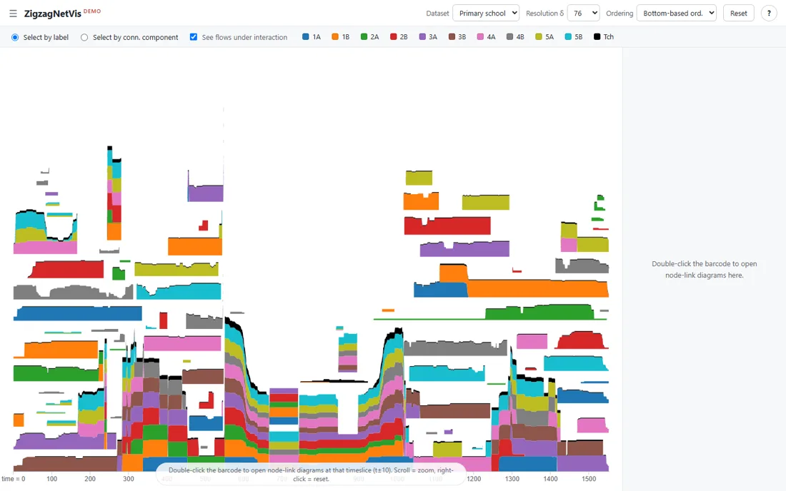
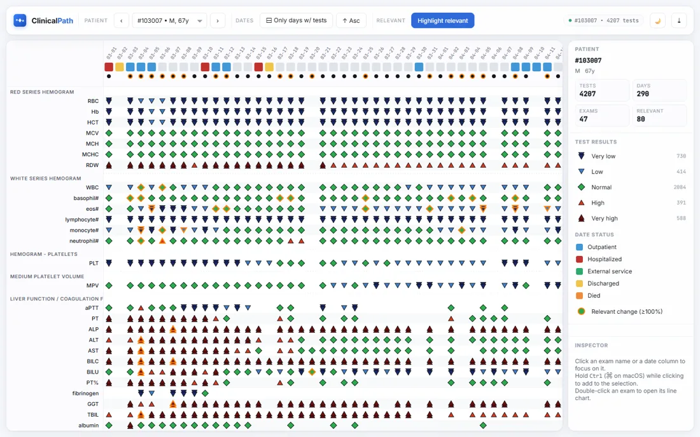
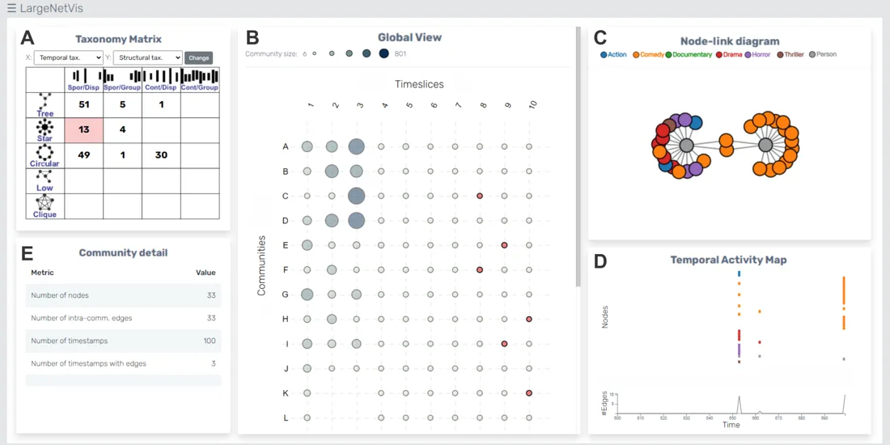
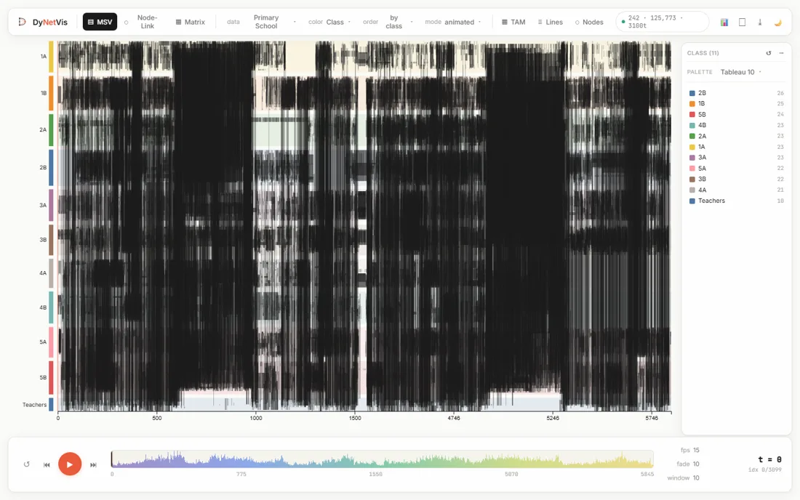

Forestry
Visual analytics for forest data, such as LiDAR point clouds of trees, within the university's Forest Values strength area.
Associate Professor · Department of Computer Science and Media Technology · Faculty of Technology
I design interactive visualizations that help people make sense of networks that change over time and complex real-world data.
My research covers information visualization, network visualization, human–computer interaction, visual analytics and human-in-the-loop AI, applied together with domain experts, especially in forestry and healthcare.
Every circle is a person I have published with; I am the photo in the middle. Two people are linked when they wrote a paper together. Bigger circles mean more papers with me, and the colour shows the year we first published together.
The methods are general; the problems come from people working with forests, patients and cities.
Visual analytics for forest data, such as LiDAR point clouds of trees, within the university's Forest Values strength area.
Electronic health records for clinical decision-making, interoperable health databases, and epidemics on contact networks.
Urban data, mobility and equity: fair urban planning in Sweden and pandemic scenario planning for public health.
Web versions of systems from my papers. No installation; click a card to open the live demo.

live demoVisual analytics for forest LiDAR point clouds.

live demoSuggests temporal resolutions for graph visualization using zigzag persistence.

live demoShows a patient's exams over time to support clinical decision-making with electronic health records.

live demoExplores large temporal networks through community taxonomies.

live demoVisualizes structure and epidemic processes on temporal networks.
 Project image · Linnaeus University
Project image · Linnaeus UniversityAn interactive, open-source platform that combines urban data, network science and visualization to study how virus-caused pandemics affect different communities in Sweden: healthcare access, social vulnerability, mobility and infrastructure resilience. It supports scenario planning for public health officials, urban planners and policymakers.
Ten key papers: IEEE TVCG and CG&A articles and the most cited work. Citation counts come from Google Scholar; the full list lives there.